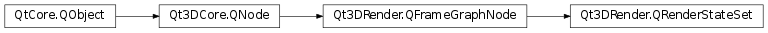

Qt3DRender.QRenderStateSet¶
Synopsis¶
Functions¶
- def
addRenderState(state) - def
removeRenderState(state) - def
renderStates()
Detailed Description¶
The
QRenderStateSetFrameGraphnode offers a way of specifying a set ofQRenderStateobjects to be applied during the execution of a framegraph branch.States set on a
QRenderStateSetare set globally, contrary to the per-material states that can be set on aQRenderPass. By default, an emptyQRenderStateSetwill result in all render states being disabled when executed. Adding aQRenderStatestate explicitly enables that render state at runtime.The RenderStateSet is enabled when added to the active frame graph:
// using namespace Qt3DRender; Qt3DCore::QEntity *rootEntity = new Qt3DCore::QEntity(); QRenderSettings *renderSettings = new QRenderSettings(); QViewport *viewport = new QViewport(); QCameraSelector *cameraSelector = new QCameraSelector(viewport); QClearBuffers *clearBuffers = new QClearBuffers(cameraSelector); clearBuffers->setBuffers(QClearBuffers::ColorDepthBuffer); QRenderStateSet *renderStateSet = new QRenderStateSet(cameraSelector); QCullFace *cullFace = new QCullFace(renderStateSet); cullFace->setMode(QCullFace::Front); renderStateSet->addRenderState(cullFace); renderSettings->setActiveFrameGraph(viewport); rootEntity->addComponent(renderSettings);See also
QRenderStateQRenderPass
-
class
PySide2.Qt3DRender.Qt3DRender.QRenderStateSet([parent=nullptr])¶ Parameters: parent – PySide2.Qt3DCore.Qt3DCore::QNode
-
PySide2.Qt3DRender.Qt3DRender.QRenderStateSet.addRenderState(state)¶ Parameters: state – PySide2.Qt3DRender.Qt3DRender::QRenderStateAdds a new
QRenderStatestateto theQRenderStateSetinstance.Note
Not setting any
QRenderStatestate on aQRenderStateSetinstance implies all the render states will be disabled at render time.
-
PySide2.Qt3DRender.Qt3DRender.QRenderStateSet.removeRenderState(state)¶ Parameters: state – PySide2.Qt3DRender.Qt3DRender::QRenderStateRemoves the
QRenderStatestatefrom theQRenderStateSetinstance.
-
PySide2.Qt3DRender.Qt3DRender.QRenderStateSet.renderStates()¶ Return type: Returns the list of
QRenderStateobjects that compose theQRenderStateSetinstance.
© 2018 The Qt Company Ltd. Documentation contributions included herein are the copyrights of their respective owners. The documentation provided herein is licensed under the terms of the GNU Free Documentation License version 1.3 as published by the Free Software Foundation. Qt and respective logos are trademarks of The Qt Company Ltd. in Finland and/or other countries worldwide. All other trademarks are property of their respective owners.